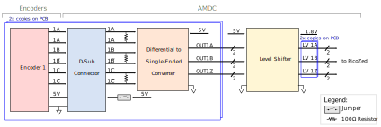
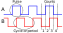
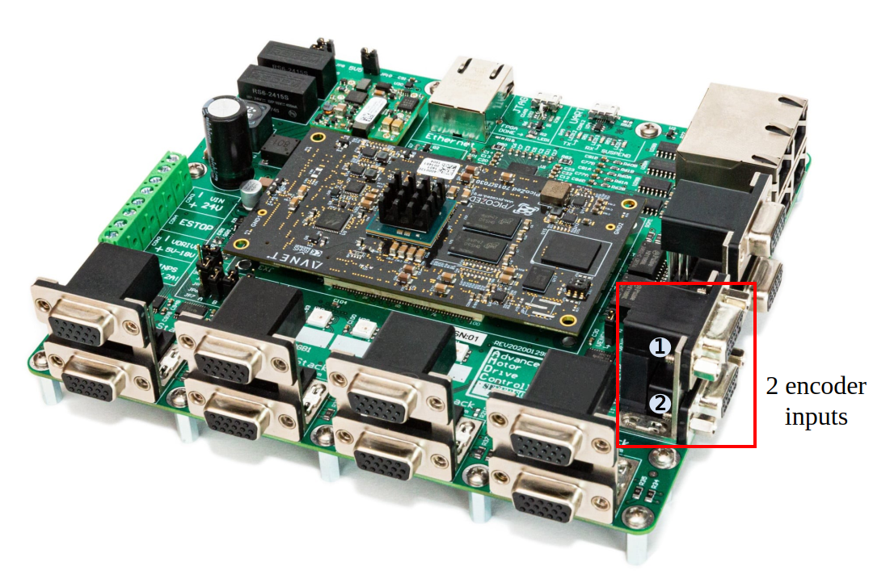

Encoder Input¶
This document describes the design considerations and implementation details for the encoder input subsystem on the Advanced Motor Drive Controller (AMDC). A block diagram is presented and each component is discussed in detail. Specifications of each component are provided based on the datasheet.
Relevant Versions of AMDC Hardware¶
AMDC REV D
Design Requirements¶
There are two design requirements that must be met for the encoder subsystem of the AMDC:
Interface standard differential incremental encoders (5V differential unipolar signals) to FPGA.
Provide a high-bandwidth front-end so that the encoder line count is limited by the FPGA speed, not circuitry.
Block Diagram¶

1. Encoders¶
The AMDC supports two independent encoder interfaces. These must be incremental encoders outputting differential ABZ signals (i.e. the encoder outputs both the non-inverting and inverting signal, e.g. nA and nA̅). If the encoder only provides single-ended ABZ outputs, an adapter must be used between the encoder and the AMDC which converts the single-ended outputs to the differential signals required by the AMDC. For proper operation, the encoder ground should be connected to the AMDC ground via a pin on the DB9 connector. For powering the encoder, the user can either utilize the 5V power rail provided in the DB9 connector or provide their own external power supply.
Maximum Encoder Frequency Output¶
Users must select an appropriate encoder for their application. Typically, the decision is based on cost, physical size, rotor speed, and maximum supported frequency output. The last metric, maximum frequency output, is determined by the AMDC hardware.
The maximum encoder signal frequency that the AMDC is able to receive depends on the FPGA clock frequency, which is nominally 200MHz. It is suggested that there is a minimum of a 10x oversampling ratio. This means the frequency of changes in the encoder count should be less than 20MHz (20 million pulses per second).
Encoder Example Application¶
Encoder frequency calculations are now provided to evaluate whether an example encoder is compatible with the AMDC. In this example, the encoder has 1024 counts (i.e. counts per revolution CPR = 1024) and the maximum rotor speed is 60kRPM (1000 rev/sec). At the maximum rotor speed, the count variable changes at a frequency of 1000 rev/sec * CPR = 1.024MHz. This is below the maximum recommended limit of 20MHz, so this application will work with the AMDC hardware.
To show what is meant by pulses and counts, an example plot of the A and B quadrature signals is presented below:

PPR describes the number of high pulses on either A or B over a single revolution. This is equivalent to cycles or periods per revolution. CPR usually denotes the counts per revolution, which represents the number of quadrature decoded states between A and B. The plot above shows that there are 4 states per square wave period, therefore, CPR = 4 * PPR.
Terminology differs from manufacturer to manufacturer. It is recommended that the user verifies that PPR or CPR have this same definition in the specification of an individual encoder. This manufacturer, for example, has a different definition of CPR and PPR. They define CPR as cycles/rev which is equivalent to pulses/rev (PPR) in this document, and they define PPR the same as CPR in this document. To avoid confusion, the larger of the two (the 4x one - counts/rev) should always be used when calculating the frequency and comparing with the maximum recommended limit of 20MHz. More information on CPR and PPR can be found here and in the comments of PR 106.
2. DB9 Connector¶
Each D-sub connecter has 9 pins that are assigned to the signals indicated in the table below. A jumper should be installed if the encoder is to be powered by the 5V AMDC supply (JP2 for Encoder 1 and JP3 for Encoder 2), as shown in the block diagram. Encoder 1 and Encoder 2 correspond to the top and bottom encoders in the picture below.
A table of the pin mappings for each D-Sub connector is shown below:
Pin number |
Signal name |
|---|---|
1 |
A |
2 |
A̅ |
3 |
B |
4 |
B̅ |
5 |
Z |
6 |
Z̅ |
7 |
5V |
8 |
GND |
9 |
GND |
To view the mapping between the AMDC schematic labels, PicoZed pins, and Zynq-7000 balls used in Vivado, take a look at the encoder section of the pin mapping document.
The location of these encoder connectors on the AMDC is shown below:

More information on the D-sub connector can be found here.
3. Differential to Single-Ended Conversion¶
After passing through the D-sub connector, the differential ABZ signals (nA, nA̅, nB, nB̅, nZ, nZ̅) are converted to the single-ended ABZ signals (OUTnA, OUTnB, OUTnZ) using the AM26C32 chip. The following table summarizes the recommended operating conditions of this chip:
Parameter |
MIN |
NOM |
MAX |
|---|---|---|---|
High-level input voltage (logic HIGH)1 |
2V |
5V |
|
Low-level input voltage (logic LOW)1 |
0V |
0.8V |
|
Common-mode input voltage |
-7V |
7V |
1 High-level input voltage and Low-level input voltage values are with respect to Common-mode input voltage.
When the IC is operated at nominal conditions (Vcc = 5V, room temperature 25C), the high-level output voltage is 3.8V or more and low-level output voltage is around 0.2V. The chip typically consumes approximately 10mA, which translates to 50mW of power.
Before connecting the encoder to the AMDC, the user should check if the encoder output signals satisfy recommended operating conditions of the chip. More detailed information on the operating conditions can be found in the datasheet.
4. Level Shifter¶
After the encoder differential signals are converted to the single-ended, these signals are level-shifted/translated to a lower voltage, allowing compatibility with the PicoZed FPGA. The level shifter SN74LVC8T245 uses two separate configurable power-supply rails and allows for the bidirectional operation. Signals on each side (input or output) are referenced to their respective voltage rail. In the AMDC REV D design, the input voltage rail is at 5V and the output voltage rail is at 1.8V. The outputs of this chip (6 signals in total if 2 encoders are connected) are then transmitted to PicoZed.
PCB Layout¶
All chips and D-sub connectors are located on the top layer. The top layer is used to route the signals from the D-sub connectors to the differential to single-ended converter then to the level shifter. The inner layers are used to route the signals from the level shifter to PicoZed. Each inverting and non-inverting pair of the encoder signals are terminated by a resistor on the bottom layer. All signal traces have a 6mil thickness. Supply and ground traces connected to the chips have a thickness of 10mil.